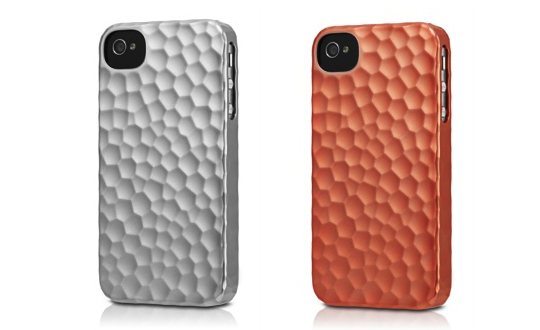
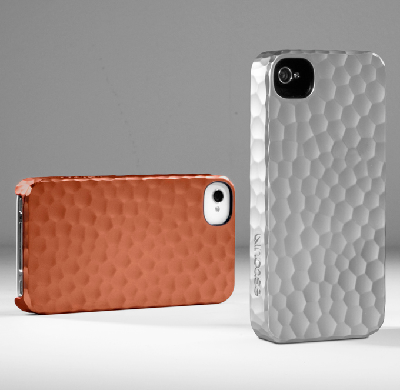
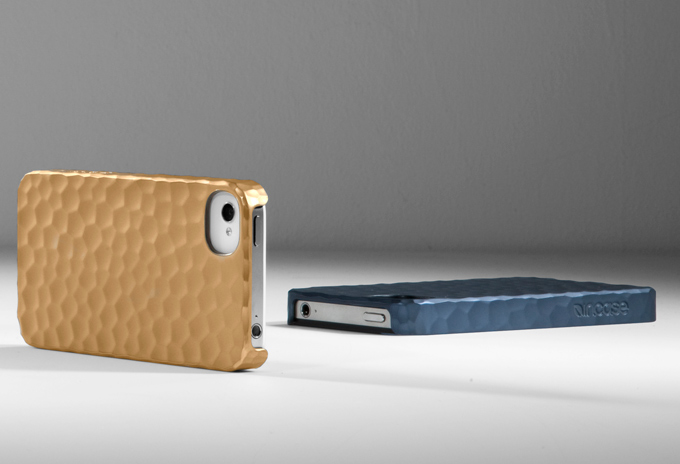

Back to Work

Product · Consumer Electronics
Incase
A hammered metallic snap case for iPhone, built to pair everyday durability with a refined, tactile finish.
Product · Consumer Electronics
A hammered metallic snap case for iPhone, built to pair everyday durability with a refined, tactile finish.
The brief was to design a protective case that felt considered rather than bulky — something that could stand up to daily wear while still reading as a premium accessory. The hammered metallic finish became the starting point: a texture that hides fingerprints and micro-scratches while giving the case a distinct, tactile identity on the shelf.
The snap-fit shell was engineered to protect the corners and edges of the phone without adding unnecessary bulk, keeping the device's original proportions largely intact while reinforcing the areas most prone to impact.


Multiple metallic finishes and hammer-texture depths were prototyped to balance grip, scratch resistance, and visual richness under different lighting. The final texture was tuned so it would catch light distinctly without looking busy or overly industrial.
Fit and tolerance testing across production runs ensured the snap mechanism stayed secure and easy to install, while the internal lip was refined to shield the screen edge during drops.

The case shipped as part of Incase's protective accessories line, offering a distinct material language within a crowded category — proof that everyday protection doesn't have to come at the cost of considered design.